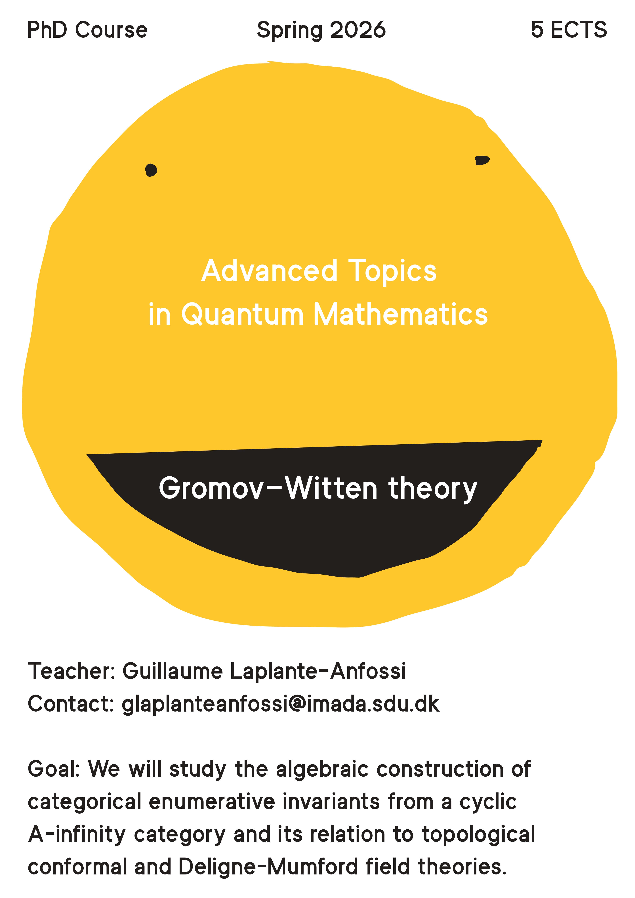

Advanced Topics in Quantum Mathematics
The goal of these lectures is to study the algebraic construction of categorical enumerative invariants from a cyclic A-infinity category and a splitting of the Hodge filtration due to Caldararu—Costello—Tu, and its relation to topological conformal and Deligne—Mumford field theories.
The precise content of the course can be amended at the beginning of the semester based on the common interests of the students.
Planning
Week 5
Week 6
With Barkan
and Steinebrunner, we show that any open field theory extends
canonically to an open-closed field theory whose value at the circle
is the Hochschild homology object of the E_1-Frobenius algebras (i.e.
E_1-Calabi-Yau objects) A associated to F. In particular, we show that
the open-closed bordism category is obtained by formally adjoining
iterated Hochchild homology to the open bordism category. As a
corollary, we determine that the moduli spaces of surfaces is the
space of universal formal operations on the Hochschild homology object
of E_1-Frobenius algebras. This provides a space level refinement of
previous work of Costello (over Q) and Wahl (over Z).
Time permitting, I will also explain work
with Andrea Bianchi on canonical local to global extensions of
graph TFTs associated with E_\infty-Frobenius objects, i.e. in
dimension infinity. In this case, we show that the graph cobordism
category is obtained by formally adjoining to the \infty-category of
graphs the factorization homology of the universal E_\infty-Frobenius
algebra over any sapce X.
Week 7
The goal is to explain, following Costello's Topological conformal field theories and Calabi—Yau categories, how to construct a universal open-closed TCFT from a cyclic A-infinity algebra, and how to extract categorical enumerative invariants. This is an algebraic version of the theorem of Barkan-Steinebrunner-Zhang presented by Adela last week.
Week 8
The goal is to present the construction of Caldararu-Tu, and distribute the upcoming talks. Based on the paper Effective Categorical Enumerative Invariants.
Week 9
Explain string vertices as Maurer--Cartan elements in the Lie algebra associated with a convolution operad. A good reference is the book Algebraic Structure of String Field Theory by Doubek-Jurčo-Markl-Sachs.
Week 10
Primary references